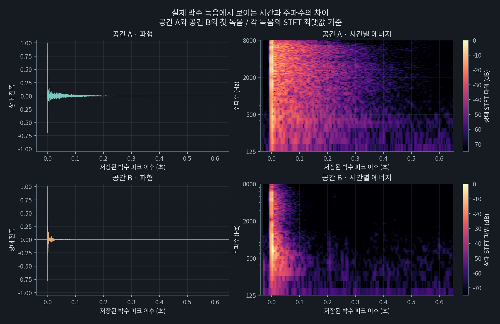
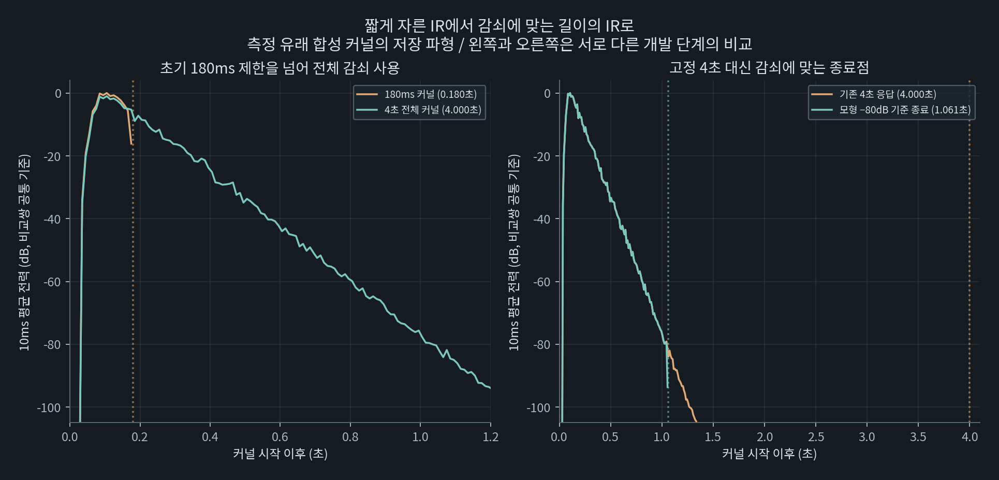
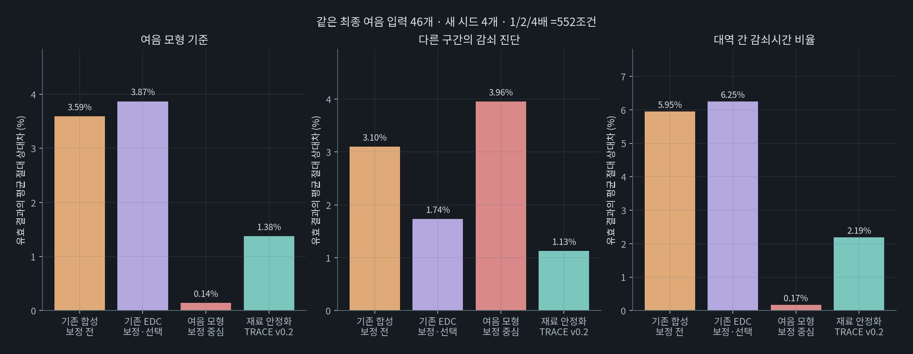
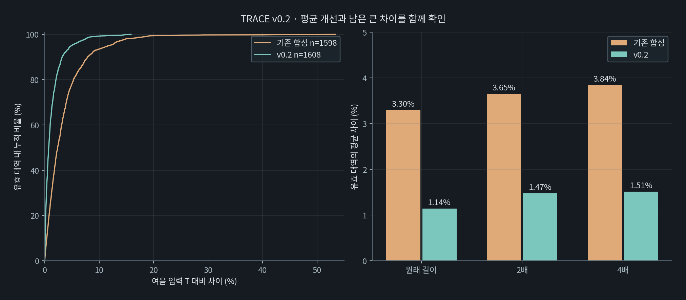
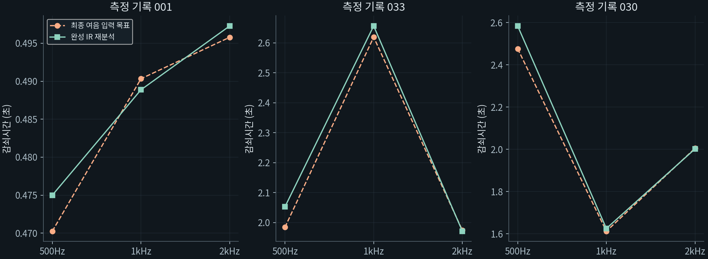
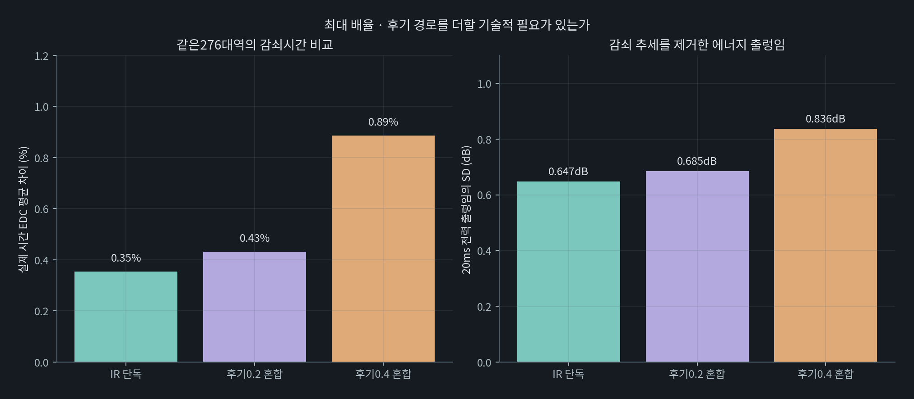
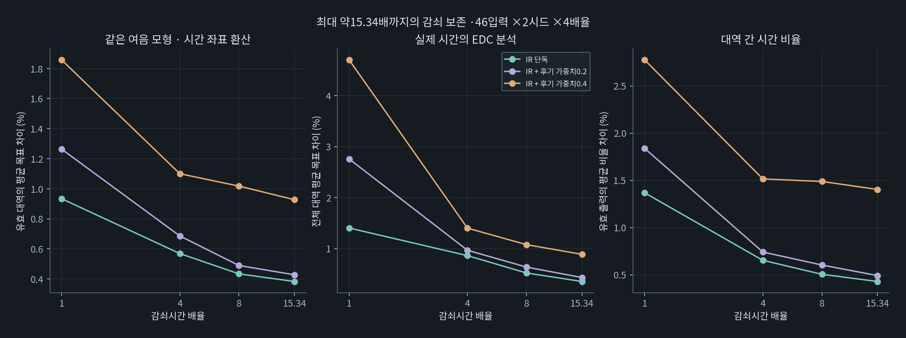

간단한 공간 감쇠 측정을 이용한 IR 합성과 창작 활용
여음 측정 데이터를 기반으로 한 잔향 합성 엔진 TRACE의 개발 및 BLOOM의 적용 및 활용
기술 연구 보고서 · 작성 강민구(Mingkoo) · 2026년 11월
대상 연구 여음 트레이스 · 문서판 1.0
목차
초록
여음은 스마트폰과 세 번의 박수로 공간의 대역별 감쇠시간을 추정하는 도구다. 이 연구는 여음의 측정값을 합성 임펄스 응답(IR)으로 구성하고, 측정에서 얻은 소멸 속도와 대역 간 관계를 창작용 소리 재료로 전달할 수 있는지 검토한다. 이를 위해 잔향 합성 엔진 여음 트레이스(YEOEUM TRACE)를 개발하고, 짧은 녹음 소재와 후기 잔향을 결합한 초기 방식에서 전체 감쇠를 포함하는 IR 단독 방식으로 설계를 변경했다. 최종 여음 입력 46개·네 시드·세 배율의 552조건에서 재료 전력을 안정시키고 입력 감쇠시간을 직접 적용한 연구 구현의 유효 대역 평균 차이는 기존 합성의 3.59%에서 1.38%로 줄었다. 길이 변형과 후기 경로 추가는 별도 조건으로 검사했다. 결과는 측정 감쇠를 합성 응답으로 전달하는 일관성을 뒷받침하며, 원 공간의 반사 구조·위상·좌우 응답 전체의 복원이나 측정 정확도를 입증하지 않는다.
1. 무엇을 남기고자 했는가
1.1 연구 질문과 보존할 정보
이 연구의 질문은 여음의 간단한 측정으로 얻은 감쇠 특성을 의미 있는 공간 기반 IR로 만들고, 창작에 사용할 수 있는가이다. 평가 대상은 대역별 감쇠시간과 그 비율이다. 낮은 대역이 오래 남고 높은 대역이 빨리 사라지는 측정이라면, 그 관계가 합성 응답에도 반영되는지를 확인한다.
IR은 입력에 시간·주파수 특성을 적용하는 응답 형식이다. 새로운 소리와 IR을 컨볼루션하면 응답의 소멸 특성이 그 소리에 작용한다. 여기서 공간 기반이라는 말은 파형 전체가 현장 녹음으로 이루어졌다는 뜻이 아니라, 공간 측정에서 얻은 값이 응답의 감쇠를 결정한다는 뜻으로 사용한다.

1.2 여음과 트레이스, 블룸의 역할
여음은 박수를 녹음하고 감쇠를 추정한다. 여음 트레이스(YEOEUM TRACE, 이하 트레이스)는 그 대역별 추정값을 받아 IR을 합성하는 엔진이다. 여음 블룸(YEOEUM BLOOM, 이하 블룸)은 해당 응답을 새로운 입력에 적용하는 리버브 플러그인이다. 트레이스는 여음 측정 기술의 연장선에 있으며, 블룸의 제품 제작과 배포 결정은 후속 과제로 구분한다.
여음 앱의 대표값은 500Hz·1kHz·2kHz의 대역별 결과를 동일하게 평균한 값이다. 트레이스의 검증에는 평균 이전의 대역별 값을 사용한다. 합성 연구에서 추가한 4kHz는 별도 연구용 입력이며 앱 대표값의 추가 측정 대역으로 취급하지 않는다.
2. 어떤 문제를 고려했고 무엇을 선택했는가
2.1 녹음 소재에서 감쇠 기반 합성으로 변경한 이유
초기에는 박수 뒤의 짧은 녹음 구간을 창작 소재로 사용했다. 세 박수의 파형 평균과 STFT 크기 재합성도 비교했으나, 위상 상쇄와 재구성 오차가 있었고, 비교한 방법만으로는 박수·기기·배경소음을 공간 응답에서 분리하지 못했다. 따라서 원 녹음의 질감을 사용하는 경로와, 측정한 감쇠시간을 명시적으로 전달하는 경로를 구분했다.자료 1
초기 블룸은 약 180ms의 소재에 피드백 지연망(FDN)의 후기 잔향을 더했다. 이후에는 측정한 감쇠로 응답 전체를 합성하고, 가장 긴 목표가 모형상 −80dB에 도달하는 지점까지 IR을 사용했다. 이는 현장에서 −80dB까지 측정했다는 뜻이 아니라 합성 응답의 종료 기준이다. 짧은 절단을 없앤 뒤에는 후기 경로를 필수 구성으로 전제하지 않고 그 기여를 다시 비교했다.

2.2 채택한 합성 구성
최종 여음 모형은 대역 전력을 P(t)=A exp(−6 ln(10)t/T)+N으로 추정한다. 트레이스가 전달받는 것은 감쇠시간 T이며, 신호 크기 A와 잡음 바닥 N을 공간의 음색으로 복제하지 않는다. 합성에는 대역별 진폭 포락선 a(t)=exp(−ln(1000)t/T)를 적용한다. 이러한 주파수별 감쇠 합성은 합성 IR과 벨벳 노이즈 잔향 연구를 참고하되, 기존 논문의 전체 알고리즘을 재현한 것으로 주장하지 않는다.Borß, 2009 · Välimäki 외, 2017
| 검토한 문제 | 채택한 구성 또는 판단 |
|---|---|
| 대역 경계의 인위적인 꺼짐 | 대역별 독립 재료와 가중치 제곱합이 1인 전력 보완 연결 |
| 감쇠 이전 재료의 에너지 변동 | 초당 2,000펄스의 핑크 벨벳 재료, 20ms 전력 평균과 10ms 추가 평활, 원래 대역 에너지 복구 |
| 기준점 사이와 바깥의 값 | 열 개 옥타브 중심에 로그 주파수 보간, 500Hz 아래·4kHz 위는 끝값 유지 |
| 시작·종료 처리 | 5ms 상승, 80Hz·12kHz 각 2차 필터, 모형 −80dB 이후 20ms 종료 페이드 |
| 분석값을 맞추기 위한 시간 보정 | 특정 모형의 수치는 줄었으나 다른 감쇠 진단이 악화되어 기본에서 제외 |
| 추가 후기 잔향 | 전체 IR을 개선한 뒤 별도 비교하고, 기본 필수 경로로 채택하지 않음 |
재료 안정화 이득은 0.5–2로 제한하며 감쇠를 적용하기 전에 처리한다. 입력 T는 직접 적용한다. 출력 시간값을 다시 맞추는 대신 합성 구조의 변동을 줄이는 선택이다.자료 2
2.3 검증 자료와 평가 방법
최종 여음 기준으로 다시 분석한 49개 기록 묶음 중 필요한 대역 입력을 확보한 46개를 사용했다. 500Hz가 없는 3개는 미제공으로 남겼으며, 품질 경고나 반복 편차만을 이유로 표본을 추가 제외하지 않았다. 이 기록 수는 독립된 장소 수가 아니다.
| 검증 묶음 | 조건 | 평가 목적 |
|---|---|---|
| 연구 구현의 설계 비교 | 입력 46개 × 4시드 × 3배율(1·2·4배) = 552조건 | 재료·연결·보정 방식의 선택 |
| 길이 확장과 후기 비교 | 입력 46개 × 2시드 × 4배율(1·4·8·약 15.34배) = 368조건 | 긴 IR의 감쇠와 후기 경로의 기여 |
| C++ 실행 구현의 별도 검사 | (실측 입력 46 + 진단 프로필 5) × 2시드 × 3길이 = 306IR | 구현 및 길이 범위의 확인 |
연구 구현(v0.2)은 기존 유효 대역이 새 구성에서 미제공이 된 7/552조건에 한해 보정 전 기존 출력을 유지했다. C++ 실행 구현은 난수·FFT 격자가 다르고 이 대체 선택을 수행하지 않으므로 별도 결과로 제시한다. 두 구현의 수치를 합산하거나 직접 우열로 비교하지 않는다.
주 지표는 앱의 세 대역에 대한 |재분석 T / 입력 목표 T − 1| × 100이다. 누적 에너지 감쇠 곡선(EDC)의 −5~−25dB 기울기는 별도 진단으로 사용한다. 설계 비교의 552조건과 실행 구현의 단축·원래 길이는 실제 시간의 20ms 전력 창으로 분석했다. 별도 최대 확장 검사와 실행 구현의 최대 길이는 주파수를 유지한 채 τ=t/s로 분석 시간을 환산하고 추정값을 다시 s배 했으며, 물리 시간 EDC를 병행했다. 이는 긴 파일을 현재 앱에서 그대로 측정한 시험과 다르다.
분석 바닥값을 추가하지 않은 조건과, 대역별 초기 전력 대비 −60dB의 일정 바닥값을 더한 통제 조건을 구분했다. 후자는 실제 주변 소음이나 독립 잡음 파형을 추가한 실험이 아니다. 유효값이 반환되지 않은 대역은 오차 평균에서 제외하되 그 수를 함께 제시한다. 세부 프로토콜과 단축 분석의 정정 근거는 보충자료에 보존했다.
3. 어디에 한계가 있는가
3.1 대역별 감쇠시간이 전달하지 않는 정보
대역별 T만으로 개별 반사의 도착 시각과 크기, 정확한 위상, 음원·수음점의 위치와 좌우 구조를 결정할 수 없다. 초기 대역 에너지와 세밀한 공진도 별도 정보다. 벨벳 재료·핑크 가중치·보간·출력 필터는 합성의 선택이며 원 공간에서 측정한 전체 주파수 응답으로 해석하지 않는다.
현재 구성은 각 대역의 감쇠를 한 시간값으로 전달한다. 초기와 후기의 속도가 달라지는 감쇠 곡선 전체를 복원한 것은 아니다. 추가 곡선 정보를 사용하는 탐색은 별도 연구로 남겼다.
3.2 입력과 분석의 유효성
입력 추정에는 박수의 여기 에너지, 기기 처리, 클리핑, 배경소음과 반복 편차가 영향을 준다. 합성기가 입력 T를 잘 따르더라도 그 T가 실제 공간을 정확하게 나타내는지는 별도 문제다. 따라서 합성 재분석 차이를 여음의 물리 측정 오차로 제시할 수 없다.
출력의 내부 시간 추정치가 있어도 신호 지속시간이나 모형 적합성 조건을 통과하지 못하면 공식 유효값이 반환되지 않는다. 이 미제공은 IR 생성 실패와 구분해야 한다. 특히 매우 짧은 응답과 분석 바닥값을 추가하지 않은 조건에서 유효성 한계가 남았다. 일정 바닥값을 더한 조건의 제공률로 실제 환경의 모든 잡음에 대한 성능을 보장하지 않는다.
3.3 결과의 적용 범위
설계 비교는 기존 개발 기록을 사용했고 결과를 확인하며 구성을 수정했다. 새로운 장소의 독립 검증이나 맹검 시험이 아니다. 평균 차이는 모든 출력의 오차 상한을 뜻하지 않으며, 시드와 대역에 따른 큰 잔차도 결과에 포함한다.
이 연구에서 확인한 대상은 측정 입력과 합성 응답의 감쇠 일관성이다. 원 공간과의 청감상 동일성, 자연스러움과 음악적 선호는 정식 청취 평가로 입증하지 않았다. 분석 창·시작 처리·재료 변동이 잔차에 기여하는 비율도 분리해 확정하지 않았다.
4. 그럼에도 무엇이 의미있게 남았는가
4.1 측정 목표와 합성 응답의 연결을 확인했다
최종 여음 입력에 대한 연구 구현의 결과는 다음과 같다. 과거 방식도 같은 최종 입력에 다시 적용해 비교했다. 네 시드와 세 배율의 552조건이며, 여음 모형 평균·최대는 유효한 앱 세 대역에 대한 값이다.자료 2
| 구성 | 유효 대역 | 모형 평균 차이 | 모형 최대 차이 | EDC 평균 차이 |
|---|---|---|---|---|
| 같은 최종 입력의 기존 합성 | 1,598/1,656 | 3.59% | 53.36% | 3.10% |
| 이전 EDC 보정·선택의 재평가 | 1,603/1,656 | 3.87% | 73.78% | 1.74% |
| 여음 모형 보정 중심 | 1,604/1,656 | 0.14% | 11.51% | 3.96% |
| 채택한 연구 구현 v0.2 | 1,608/1,656 | 1.38% | 15.85% | 1.13% |

양쪽에서 공통으로 유효한 1,598대역에서도 평균은 3.59%에서 1.38%로 줄었다. 대역 간 감쇠시간 비율의 평균 차이는 5.95%에서 2.19%로 줄었다. 이 결과는 유효 표본 수의 변화만으로 평균이 줄어든 것이 아니라, 검토한 조건에서 측정 목표의 전달이 개선됐다는 근거다.


합성 파형의 재료와 위상은 새로 구성되지만, 대역별 소멸 속도의 목표는 측정에서 정해진다. 그 목표와 출력의 관계를 추적하고 검사할 수 있다는 점에서, 트레이스의 IR은 해당 측정에 기반한 창작용 소리 재료로 의미를 가진다.
4.2 충분한 IR을 사용한 뒤 후기 경로를 재평가했다
길이 확장 비교에서는 단위 에너지를 맞춘 후기 출력을 진폭 0.2 또는 0.4로 더했다. 같은 목표와 시드를 사용한 비교에서 여음 모형·물리 EDC·20ms 전력 변동의 평균 지표가 개선되는 근거를 얻지 못했다. 이에 측정 감쇠를 전달하는 기본 응답은 IR 단독으로 정리했다.자료 3

이 검사의 약 15.34배에서 IR 단독의 일정 바닥 조건 모형 차이는 평균 0.27%·최대 1.30%(276/276대역), 물리 EDC 차이는 평균 0.35%·최대 1.73%였다. 별도 후기 경로가 모든 경우에 불필요하거나 음악적으로 열등하다는 결론으로 확대하지 않는다.
4.3 실행 구현의 길이 범위와 남은 잔차를 확인했다
C++ 실행 구현의 306개 IR은 연구 구현과 분리해 검사했다. 이 검사에서 최소 대표시간은 min(0.25초, 원본×0.8), 최대는 clamp(원본×20, 10초, 20초)로 정했다. 다음은 일정 −60dB 분석 전력 바닥 조건이다. 단축·원래 길이와 최대 길이의 분석 시간이 다르므로 세 평균만으로 길이별 우열을 정하지 않는다.자료 4
| 범위와 분석 | 유효 대역 | 모형 평균 / 최대 | 물리 EDC 평균 / 최대 | 바닥 추가 없음 · 유효 대역 |
|---|---|---|---|---|
| 최소 · 실제 시간 | 304/306 | 0.84% / 7.46% | 3.10% / 13.56% | 192/306 |
| 원래 길이 · 실제 시간 | 306/306 | 0.73% / 5.51% | 1.46% / 15.48% | 296/306 |
| 최대 · 시간축 환산 | 306/306 | 0.19% / 2.24% | 0.30% / 1.04% | 285/306 |
최소 길이에는 대표시간 0.25초뿐 아니라 이미 짧은 기본 프로필을 0.8배로 줄인 조건도 포함했다. 두 미제공은 목표 0.072초인 2kHz에서 유효 신호 지속시간이 40ms로 60ms 조건에 미달한 사례다. 같은 자료 중 실측 입력 46개만의 단축 276대역은 모두 유효했고 평균 0.81%·최대 4.14%였다. 바닥값을 추가하지 않은 조건의 114개 미제공도 해결된 것으로 간주하지 않는다.
분석에 사용한 306개 IR과 최종 C++ 구현에서 재출력한 파형의 해시가 일치했다. 이는 실행 결과의 재현 확인이며, 실제 공간의 정확도나 새로운 공간에 대한 일반화 검증을 추가한 것은 아니다.
5. 어떻게 활용하는 것이 적절한가
5.1 블룸을 통한 창작 도구로의 확장
블룸의 목적은 여음의 측정 결과를 창작자가 듣고 조절할 수 있는 리버브로 연결하는 것이다. 특정 공간에서 얻은 대역별 소멸 특성을 악기·음성 등 새로운 입력에 적용해 음악과 사운드 디자인의 재료로 사용한다. 여음이 감쇠 정보를 측정하고 트레이스가 이를 IR로 합성한다면, 블룸은 그 IR을 작업 중인 소리에 적용하고 조절하는 플러그인이다.
사용 흐름은 준비된 공간 프로필 선택 → 측정 길이에서 소리 확인 → 잔향 길이 조절 → 원음과의 혼합으로 구성한다. 로컬 구현의 Original 표시는 측정 길이의 기준을 제공하며, 길이 조절 시 트레이스가 모든 대역의 T를 같은 배율로 바꿔 IR을 다시 합성한다. 오디오의 재생 속도를 바꾸는 방식이 아니므로 음높이를 유지하면서 길이를 변형한다. 공간에서 얻은 대역 간 감쇠 관계를 출발점으로 삼고, 변형 배율과 원음의 혼합은 창작자의 선택으로 다룬다.

블룸의 로컬 구현에서는 IR 적용과 프로젝트 복원, 모노 IR을 입력 좌우에 각각 적용하는 실행 경로를 확인했다. 이는 제품화 검토의 기초이며, 청취 선호를 입증한 결과는 아니다. 이번 보고서의 대상은 로컬 연구 구현이며, 홈페이지에서 배포하는 블룸 1.0.1과 구분한다. 후속 제품 제작과 청취 평가는 별도 과제로 남긴다.
5.2 다른 제작 환경과 공간 기록으로의 활용 가능성
합성 결과를 IR로 제공하면 블룸 외의 컨볼루션 도구에서도 사용할 수 있다. 이를 통해 음악 제작뿐 아니라 영상·공연·설치 작업에서 특정 장소의 감쇠 특성을 소리의 재료로 연결하는 활용을 검토할 수 있다. 이러한 적용 분야의 효과와 적합성은 이번 연구에서 평가하지 않았다.
또한 측정 장소와 조건, 대역별 T, 합성 규칙과 변형 이력을 함께 보관하면 장소에서 얻은 감쇠 정보를 다시 소리로 구성할 수 있는 기록을 만들 수 있다. 이는 장소의 전체 음향을 보존하는 기록이 아니라, 측정한 감쇠 특성에 한정된 기록이다. 서로 다른 감쇠 관계를 들어보는 교육·비교 자료로의 활용도 가능성을 검토할 수 있으나, 실제 공간을 구별하거나 측정 정확도를 판정하는 도구로서의 유효성은 별도 검증이 필요하다.
5.3 활용을 뒷받침할 후속 평가
후속 평가는 적용 분야에 맞춰 구성해야 한다. 창작 도구로서는 같은 입력과 명시한 음량 조건에서 타격음·음성·지속음 및 원음과의 혼합을 비교하고, 길이 변형에 따른 밀도·음색·끊김과 조절 가능성을 살필 수 있다. 추가 확산이나 스테레오 폭도 표현상의 선택으로 평가한다. 합성한 폭을 원 공간에서 측정한 좌우 구조로 해석할 수는 없다.
이 연구가 제공하는 기반은 간단한 현장 측정에서 얻은 감쇠 정보를 검증 가능한 합성 절차를 거쳐 사용할 수 있는 소리로 연결한 것이다. 블룸은 그 첫 적용 사례이며, 다른 제작 환경과 기록·교육으로의 확장은 이 기반 위에서 검토할 후속 활용이다.
참고문헌
- Borß, C. (2009). A VST Reverberation Effect Plugin Based on Synthetic Room Impulse Responses. DAFx-09. 원문
- Välimäki, V., Holm-Rasmussen, B., Alary, B., & Lehtonen, H.-M. (2017). Late Reverberation Synthesis Using Filtered Velvet Noise. Applied Sciences, 7(5), 483. 원문
연구자료
앞서 축적한 녹음·참조 IR·제작 자료와 2026년 11월 2–5일의 재검토 결과를 사용했다. 새 현장 측정이나 실기기 음향 검증을 추가하지 않았다. 과거 비교와 분석 정정, 원자료 대응은 별도 보충자료에 기록했다.
자료 1 초기 녹음 소재와 IR 길이 비교
본문으로 돌아가기: 인용 1
짧은 소재·STFT 재합성·초기 하이브리드의 개발 자료다. 최종 성능 평가에는 합산하지 않는다. 상세
자료 2 최종 여음 기준의 설계 재검토
46개 입력·네 시드·세 배율의 연구 구현 비교다. 검증 조건과 해석
자료 3 최대 확장과 후기 경로 비교
본문으로 돌아가기: 인용 1
46개 입력·두 시드·네 배율의 별도 연구 구현 비교다. 비교 조건과 해석
자료 4 실행 구현과 단축 분석
본문으로 돌아가기: 인용 1
실측 입력과 진단 프로필을 포함한 306개 IR의 별도 검사다. 단축 분석과 정정 집계
© 2026 강민구(Mingkoo). All rights reserved.